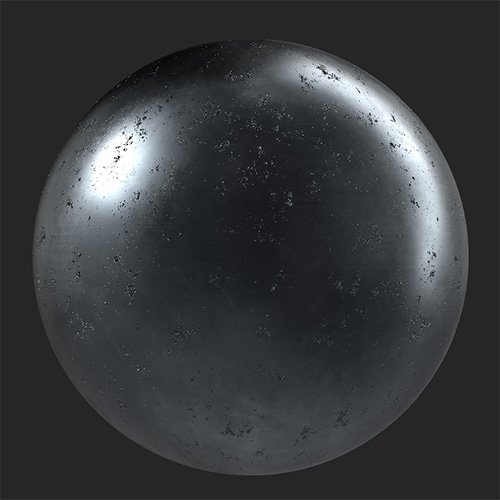
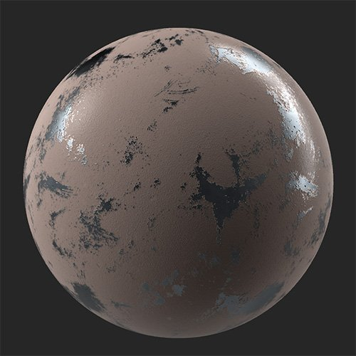

The Paint filter lets you cover your material in a layer of paint of varying thickness.
A metal material with worn paint added on top of it.


Parameters
Basic parameters
Random Seed: The random seed determines the random values of other parameters that use randomness in this filter.
Color: color select Set the paint color.
Roughness: 0-1 Set the roughness of areas that the paint covers.
Thickness: 0-1 Adjust the viscosity and thickness of the paint. This impacts how much of the underlying height and normal information is visible through the paint.
Peel: 0-1 Add patches where the paint has peeled away from the underlying material.
Grain: 0-1 Change the grain of the surface of the paint.
Grain Size: 1-5 Adjust the scale of the texture used to create the grains.
Mask
Cavity Mask: toggle Create a mask based on the cavities found in the height map. If enabled the following parameters appear:
Cavity Size: 0-1 Adjust the height range used to create the cavity mask.
Cavity Intensity: 0-1 Adjust the opacity of the mask based on cavity depth.
Cavity Invert Mask: toggle Invert the cavity mask to change whether it affects high or low points.
Use Custom Mask: toggle Enable or disable the use of a custom mask. If enabled the following parameters appear:
Mask: image/brush Select an image to use as a mask or use the brush to paint a custom mask directly in the 2D view.
Custom Mask - Blur: 0-1 Blur the mask.
Custom Mask - Invert: toggle Invert the mask.
Advanced Parameters
Base Color: toggle Set whether the base color channel is affected by the filter.
Metallic: toggle Set whether the metallic channel is affected by the filter.
Metallic Value: 0-1 Adjust metallic value of the painted areas.
Roughness: toggle Set whether the roughness channel is affected by the filter.
Normal: toggle Set whether the normal channel is affected by the filter. If enabled, an additional control appears:
Normal - Intensity: -1 to 1 Adjust the intensity of the normals.
Height: toggle Set whether the height channel is affected by the filter. If enabled, an additional control appears:
Height - Intensity: 0-1 Adjust the contrast of the height map.
Opacity: toggle Set whether the opacity channel is affected by the filter. If enabled, an additional control appears:
Opacity - Value: 0-1 Change the opacity of the material.
Emissive: toggle Set whether the emissive channel is affected by the filter. If enabled, an additional control appears:
Emissive - Color: color select Set the color of the emissive channel.
Ambient Occlusion: toggle Set whether the ambient occlusion channel is affected by the filter. If enabled, the following additional controls appear:
Ambient Occlusion - Intensity: 0-1 Adjust the strength of the generated AO.
Ambient Occlusion - Radius: 0-1 Adjust the radius of the AO effect.